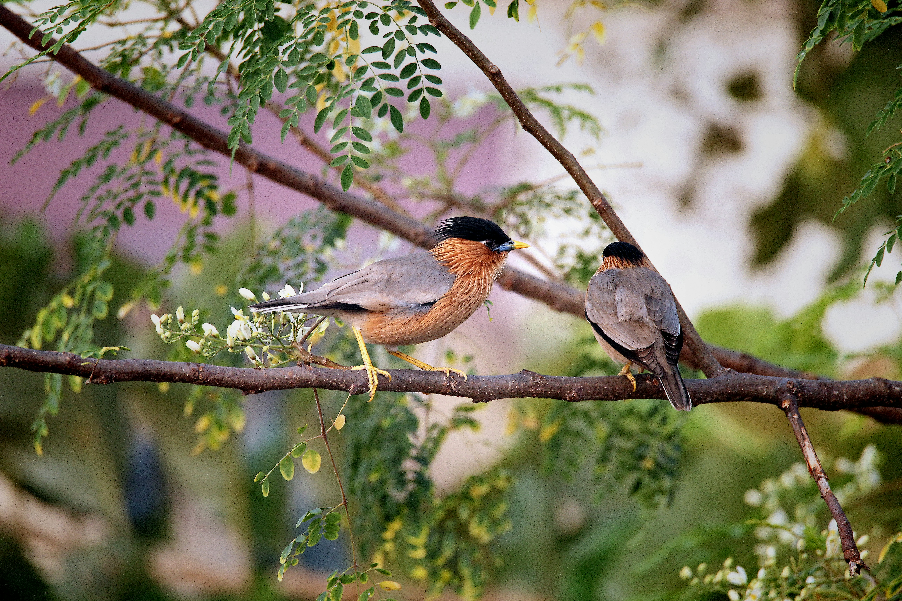

The Brahminy Starling is an attractive medium-sized starling with a pale body, black crest, chestnut shoulders, and yellowish bill and legs. It is usually found in open woodland, scrub, farmland, gardens, and dry areas. It feeds on fruits, insects, nectar, and seeds and often moves through trees and bushes in pairs or small groups. Compared with the similar Indian Pied Starling, it is distinguished by the combination of features described above. Its preference for open woodland, scrub, farmland, gardens, and dry countryside also helps separate it from species that use different habitats. Its characteristic behaviour, including active and social, usually seen singly, in pairs, or small groups, provides another useful field clue. Taken together, these differences make it easier to distinguish from similar species when the bird is seen clearly.